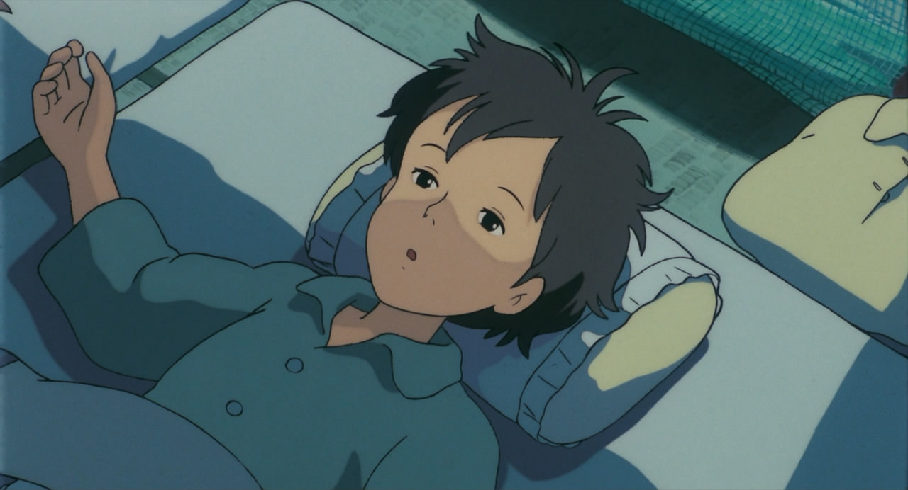
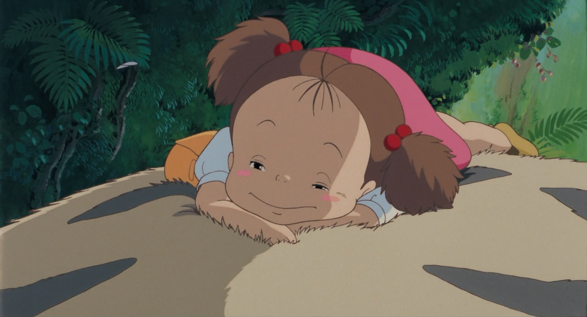
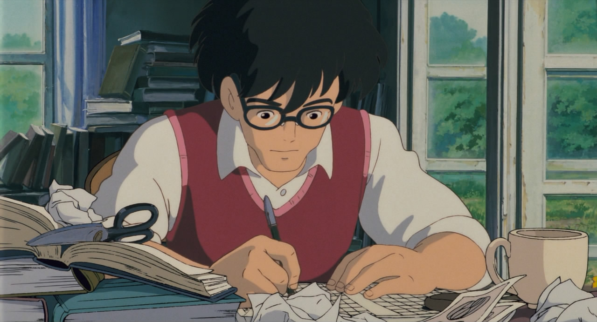
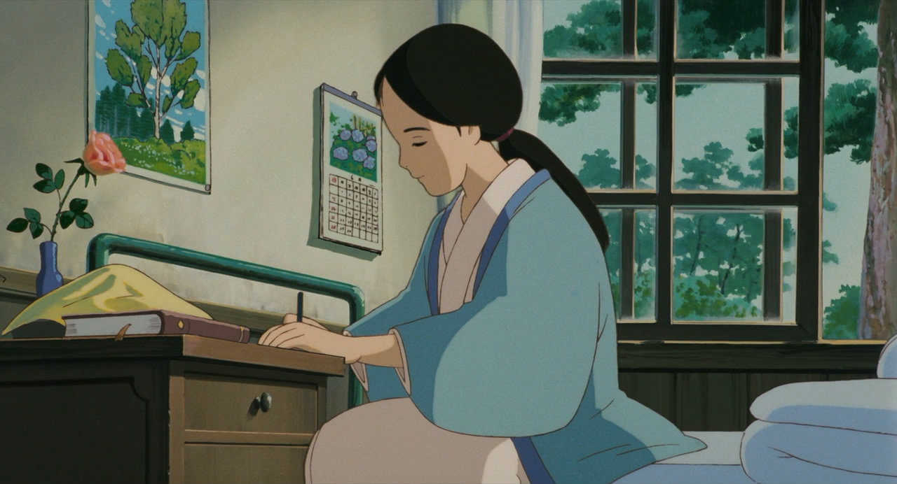
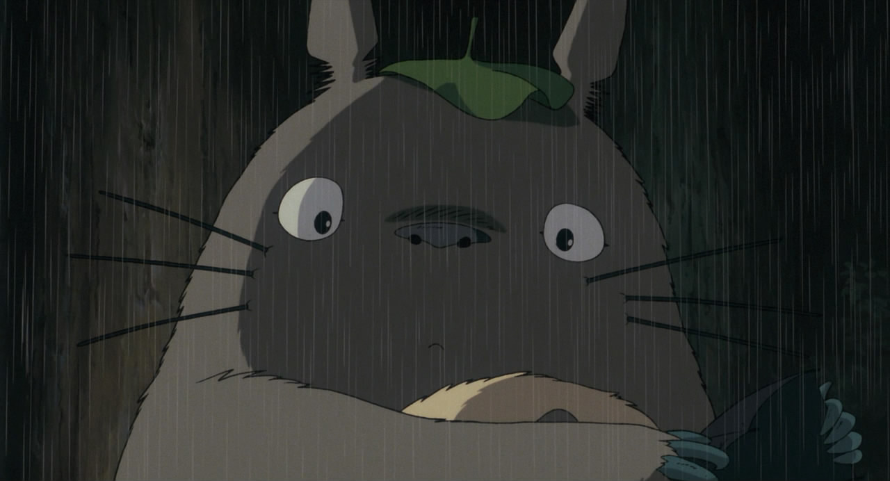
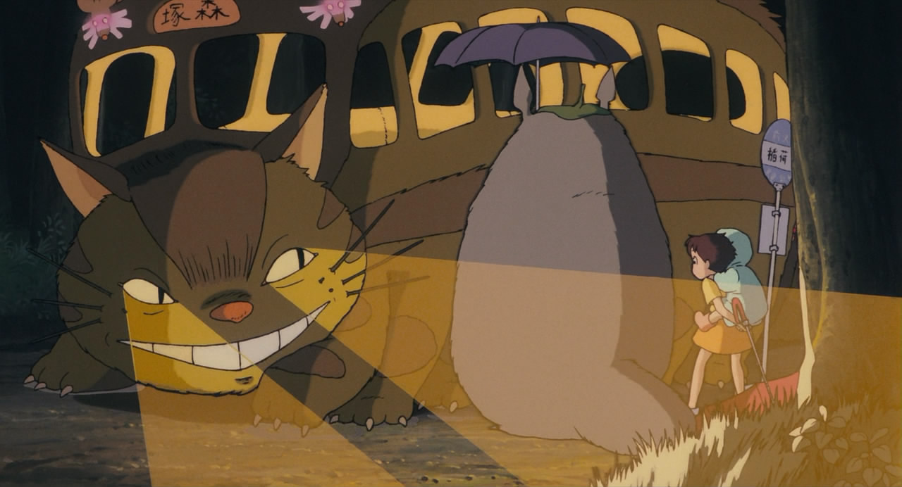
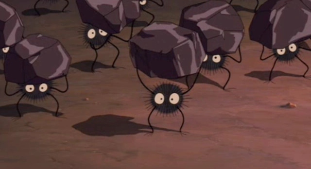

В 1950-х годах отец с двумя дочерьми переезжают в деревню. Дом настолько старый, что близок к разрушению. В нём водятся духи — «чёрные чернушки», сусуватари. Мать семейства находится в больнице, и на время её болезни вся работа по дому ложится на плечи отца и старшей дочери Сацуки. Вскоре непоседливая младшая сестра Мэй встречает маленького лесного духа, который, сам того не желая, приводит её к более крупному духу, а потом и к большому То́торо — хранителю леса, живущему неподалёку. Позже и Сацуки знакомится с Тоторо, когда девочки ждут отца на автобусной остановке. При этом Тоторо, как и другие сказочные создания в мультфильме, невидим для взрослых.
Тоторо дарит девочкам небольшой свёрток из бамбуковых листьев, в котором лежат семена. Девочки высаживают семена в огороде, а ночью Тоторо и духи помогают им прорасти. На следующий день из больницы сообщают, что мама не сможет вернуться домой на выходные. Расстроенная Мэй ссорится с сестрой и сама отправляется к матери, но по дороге теряется. Обеспокоенная Сацуки и жители окрестности везде ищут её, но безуспешно. Тогда Тоторо по просьбе Сацуки помогает её разыскать. Котобус относит девочек в больницу Ситикокуяма, и девочки видят, что с мамой всё в порядке. Во время финальных титров показано, как мама выздоравливает и приезжает в новый дом, а Мэй идёт в школу и заводит новых друзей.
Сацуки Кусакабэ — старшая сестра, бойкая худенькая девочка с короткими тёмными волосами, очень ответственная, заботится о сестре и об отце, помогает ему при переезде, готовит еду. Её мать говорит, что Сацуки ведёт себя как взрослая, так как вынужденно многое взяла на себя из-за её отсутствия. Поначалу она ссорится с соседским мальчиком, Кантой, и избегает его, однако позже меняет к нему своё отношение. Сацуки, познакомившись с Тоторо, подружилась с ним и даже просила его помощи в поисках младшей сестры.
Мэй Кусакабэ — младшая сестра Сацуки, маленькая девочка четырёх лет с каштановыми волосами, которая ещё не ходит в школу. Упрямая и обидчивая, она находится под опекой сестры. Хотя порой они и ссорятся, но тем не менее Мэй очень любит свою сестру, везде старается следовать и поспевать за ней. Она первой встречает Тоторо.
Тацуо Кусакабэ — отец двух дочерей. Спокойный и рассудительный человек, старается всё объяснить своим детям. С уважением относится к традициям и фольклору, приветствует духов леса и оказывает им почтение, показывая при этом хороший пример Сацуки и Мэй.
Ясуко Кусакабэ — мать семейства. Находится в больнице Ситикокуяма. Её не выписали на выходные из-за простуды и она не смогла приехать, поэтому врачи отправили телеграмму в деревню. Дочки сильно забеспокоились из-за этого. Считает, что не нужно было отправлять телеграмму из-за простуды, чтобы не тревожить родных.
То́торо — хранитель леса, большое мохнатое существо серого цвета. Тоторо — не традиционный японский персонаж: его полностью придумал Миядзаки. Тем не менее для Тоторо естественно находиться в системе традиционных японских представлений среди низших природных божеств, духов-хранителей местности. Согласно задумке Миядзаки, они покрыты мягким мехом и являются «смесью» нескольких животных: огромных ошейниковых совок (уши, «шевроны» на груди и «ухающие» звуки, которые тоторо издают, когда играют ночью на окаринах), барсуков и медведей (размеры, очертания тела)[2]. Не умеет говорить, издаёт только грудные рычащие звуки. Хотя Тоторо изображён добрым и милым персонажем, в фильме присутствуют намёки на то, что если его разозлить, может случиться большая беда[3]. Большого Тоторо (серого цвета) зовут О Тоторо, его рост более двух метров, а его маленьких спутников: синего — Средний Тоторо (Тю Тоторо), белого — Маленький Тоторо (Тиби Тоторо). По-японски «о» значит «большой», но в США «О Тоторо» перевели как «King Totoro». «Тю» и «тиби» означают, соответственно, средний и маленький. Занимает 24 строчку в списке 25 лучших персонажей аниме по версии.
Котобус — огромный кот-автобус. В Японии кошкам приписывают волшебную возможность изменять свою форму, когда они достигнут соответствующего возраста. Это называется «бакэнэко». Имеет указатель, показывающий куда и к кому нужно ехать. Котобус передвигается с огромной скоростью, внутри не похож на живое существо, хотя сидения покрыты мехом и могут подниматься по желанию кота. Видит в темноте, испуская из глаз лучи света. Крысы со светящимися глазами — это его сигнальные огни. Для большинства людей он невидим: когда Котобус пробегает мимо, они чувствуют лишь внезапный порыв ветра.
Сусуватари — маленькие чёрные пушистые существа. В Японии их называют маккуро куросукэ (дословно — «чёрные, как смоль, чернушки»). Бабушка Канты рассказывает девочкам о том, что этих существ зовут сусуватари, то есть «странствующая сажа», что они поселяются в покинутых домах и что они не причинят никакого вреда и скоро уйдут. В фильме они той же ночью покинули дом и переселились ближе к дереву Тоторо. Чёрные чернушки снова появляются у Миядзаки в «Унесённых призраками»
« Попробуйте засмеяться! Тогда то, что вас пугает, уйдет. »